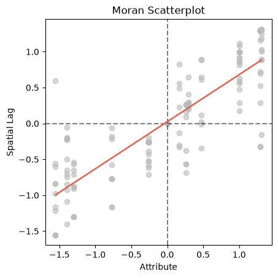
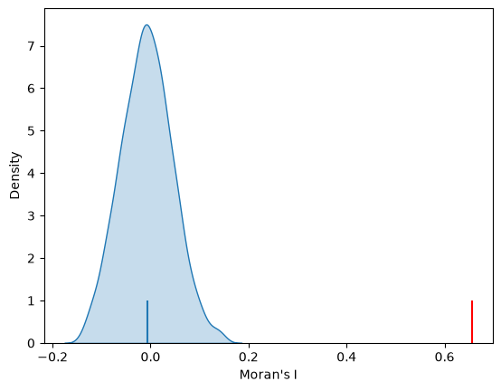

Global Spatial Autocorrelation with Moran’s I¶
This notebook focuses on global spatial autocorrelation for a continuous attribute using Moran’s I.
Learning goals¶
By the end of this notebook, you will be able to:
construct a spatial weights matrix for areal data
compute a spatial lag for a continuous attribute
interpret global Moran’s \(I\) as a summary measure of spatial autocorrelation
compare the observed statistic to a permutation reference distribution
The substantive question is whether neighborhoods with similar median Airbnb prices tend to be located near one another.
import geopandas as gpd
import matplotlib.pyplot as plt
import numpy as np
import seaborn as sns
from libpysal import graph
import esda
Our data set comes from the Berlin airbnb scrape taken in April 2018. This dataframe was constructed as part of the GeoPython 2018 workshop by Levi Wolf and Serge Rey. As part of the workshop a geopandas data frame was constructed with one of the columns reporting the median listing price of units in each neighborhood in Berlin.
df = gpd.read_file("data/berlin-housing.gpkg")
df.plot(column="median_pri")
<Axes: >

fig, ax = plt.subplots(figsize=(12, 10))
df.plot(column="median_pri", scheme="Quantiles", k=5, cmap="GnBu", legend=True, ax=ax)
<Axes: >

Why Moran’s I?¶
A map can suggest clustering, but visual impressions are not enough. Moran’s \(I\) provides a formal global test of whether nearby areas tend to have similar values more often than would be expected under spatial randomness.
Global Spatial Autocorrelation¶
Moran’s I¶
wq = graph.Graph.build_contiguity(df, rook=False).transform("r")
Attribute Similarity¶
So the spatial weight between neighborhoods \(i\) and \(j\) indicates if the two are neighbors (i.e., geographically similar). What we also need is a measure of attribute similarity to pair up with this concept of spatial similarity. The spatial lag is a derived variable that accomplishes this for us. For neighborhood \(i\) the spatial lag is defined as: $\(ylag_i = \sum_j w_{i,j} y_j\)$
The key ingredients are:
spatial proximity, encoded in the weights matrix; and
attribute similarity, summarized through the spatial lag.
The next cells build that intuition before computing the test statistic itself.
y = df["median_pri"]
ylag = wq.lag(y)
ylag
array([56.9625061 , 60.28251648, 56.37749926, 51.22200394, 51.22200394,
50.52180099, 43.6824646 , 45.63422012, 52.65491422, 60.28251648,
53.64180374, 52.73586273, 52.73586273, 56.47182541, 47.83247757,
58.58870177, 60.33520317, 59.60296903, 60.38788986, 60.02159348,
51.80624199, 57.94034958, 52.84482813, 53.40314266, 57.90522512,
60.28251648, 60.28251648, 55.79730334, 56.79401737, 50.81182589,
59.01427841, 60.29756982, 60.28251648, 50.86356888, 60.3220315 ,
60.28251648, 55.48057556, 54.42881557, 60.32466583, 59.50179418,
54.42846909, 58.55640793, 58.55640793, 57.73426285, 57.47818544,
57.74774106, 56.13040733, 48.23656082, 48.23656082, 53.74621709,
55.11957245, 45.95951271, 51.67650986, 54.1985906 , 51.45368042,
52.36880302, 54.44568253, 54.44568253, 50.84825389, 56.50104523,
53.92108345, 55.9956289 , 50.49590378, 49.14499828, 48.61369433,
49.70049 , 49.32550866, 51.22200394, 51.22200394, 47.80509822,
49.70049 , 51.22200394, 45.13594818, 47.57037048, 51.22200394,
51.22200394, 51.22200394, 51.22200394, 49.60257785, 51.57007762,
51.42743301, 51.22200394, 51.22200394, 52.43339348, 49.41551208,
51.58891296, 44.58427048, 51.58891296, 51.42743301, 49.82624902,
48.947686 , 48.40726217, 45.95951271, 47.57037048, 43.6824646 ,
47.02354965, 45.95951271, 58.55640793, 56.30865606, 58.09966066,
47.34497997, 46.40236028, 58.05298805, 59.24321365, 58.55640793,
47.83247757, 49.49497332, 50.74955784, 48.6149381 , 55.97644615,
57.95624052, 57.87081385, 58.75619634, 60.37283652, 48.23656082,
49.389711 , 54.00091705, 54.26036358, 57.54238828, 55.61980756,
51.97116137, 48.92101212, 50.97179985, 54.07504463, 47.45824547,
49.42017746, 45.13594818, 45.13594818, 48.61369433, 49.41551208,
51.22200394, 50.20766131, 48.72533471, 54.24675369, 54.24675369,
54.24675369, 53.23850377, 56.1851902 , 49.23337746, 43.6824646 ])
ax = df.plot(
ylag,
cmap="GnBu",
linewidth=0.1,
edgecolor="white",
scheme="quantiles",
legend=True,
figsize=(9, 9),
)
ax.set_axis_off()
plt.title("Spatial Lag Median Price (Quintiles)")
plt.show()

The quintile map for the spatial lag tends to enhance the impression of value similarity in space. It is, in effect, a local smoother.
df["lag_median_pri"] = ylag
f, ax = plt.subplots(1, 2, figsize=(2.16 * 4, 4))
df.plot(
column="median_pri", ax=ax[0], edgecolor="k", scheme="quantiles", k=5, cmap="GnBu"
)
ax[0].axis(df.total_bounds[np.asarray([0, 2, 1, 3])])
ax[0].set_title("Price")
df.plot(
column="lag_median_pri",
ax=ax[1],
edgecolor="k",
scheme="quantiles",
cmap="GnBu",
k=5,
)
ax[1].axis(df.total_bounds[np.asarray([0, 2, 1, 3])])
ax[1].set_title("Spatial Lag Price")
ax[0].axis("off")
ax[1].axis("off")
plt.show()

Moran’s I is a test for global autocorrelation for a continuous attribute:
Computing global Moran’s I¶
With the outcome and weights in place, we can calculate Moran’s \(I\):
where \(w_{i,j}\) is an element of the spatial weight matrix, and the total sum of weights is \(S_0 = \sum_{i} \sum_{j} w_{ij}\). The attribute vector \(z\) represents deviations from the mean: \(z_i = x_i - \bar{x}\).
rng = np.random.default_rng(12345)
mi = esda.moran.Moran(y, wq)
mi.I
np.float64(0.6563069331329718)
Positive values of \(I\) indicate that similar values are more likely to be neighbors; negative values indicate a checkerboard pattern of dissimilar neighbors.
This can be visualized through the Moran Scatterplot:
mi.plot_scatter();

The scatterplot displays the positive association between the standardized attribute values and those of the spatial lag of the standardized attribute values. Indeed, the value of the global Moran’s \(I\) is the slope of the best fit line for this scatter.
Inference¶
In order to assess whether the value of \(I\) is reflective of spatial autocorrelation, we require a reference distribution for \(I\) under the null hypothesis of complete spatial randomness. The reference distribution tells how \(I\) will behave if the underlying data generating process is truly random.
There are two classes of approaches for generating the reference distribution:
Analytical Inference
Permutation Inference
Analytical Inference for Moran’s I¶
In spatial autocorrelation analysis, establishing whether an observed Moran’s \(I\) value is statistically significant requires comparing it against a theoretical reference distribution under a null hypothesis of spatial randomness.
The theoretical moments (expected value and variance) of this statistic are derived under two fundamentally different operational assumptions regarding how the data are generated or sampled: Normality (Free Sampling) and Randomization (Non-Free Sampling).
Free Sampling¶
Conceptual Framework¶
Under the free sampling assumption, the observed values \(x_i\) are treated as an independent random sample drawn from a larger, continuous population that follows a normal distribution. The term “free sampling” implies that when a value is assigned to a spatial location, the population pool is unaffected (sampling with replacement), and the values themselves are generated by a known, underlying stochastic process independent of space.
Expected Value¶
The expected value of Moran’s \(I\) under the normality assumption is independent of the spatial weights matrix configuration and depends solely on the sample size \(n\):
Note: As \(n \to \infty\), \(E(I) \to 0\). For finite samples, the expected value is slightly negative, reflecting the algebraic fact that the sum of the deviations from the mean, (\(z_i=x_i - \bar{x}\)), must equal zero (\(\sum z_i = 0\)), which forces a minor negative bias under spatial randomness.
Variance¶
The derivation of the variance under normality assumes that the \(z_i\) terms are independent, identically distributed normal variables. The variance is heavily dependent on the topology of the spatial weights matrix:
Where the structural constants of the weights matrix are defined as:
\(S_1 = \frac{1}{2} \sum_{i=1}^n \sum_{j=1}^n (w_{ij} + w_{ji})^2\)
\(S_2 = \sum_{i=1}^n \left( \sum_{j=1}^n w_{ij} + \sum_{j=1}^n w_{ji} \right)^2\)
Non-Free Sampling (The Randomization Assumption)¶
Conceptual Framework¶
Under the non-free sampling (or randomization) assumption, we abandon the premise that the data come from an underlying continuous distribution. Instead, the set of observed data values \(\{x_1, x_2, \dots, x_n\}\) is taken as fixed and given.
The null hypothesis asserts that the observed spatial pattern is merely one of \(n!\) possible permutations of these exact values across the \(n\) spatial zones. Because a value assigned to a location cannot be reused elsewhere (sampling without replacement), the joint distribution of the spatial locations is strictly constrained by the sample’s empirical distribution.
Expected Value¶
Because the expectation across all \(n!\) permutations averages out the spatial structure, the expected value remains identical to the normality assumption:
Variance¶
The variance under randomization is mathematically more complex because it must account for the empirical shape (specifically, the kurtosis) of the observed data vector. It is calculated as:
Where \(K\) is the sample kurtosis coefficient, capturing the distribution’s peakedness/tails:
Key Distinction in Variance¶
If the observed data happen to be perfectly normally distributed, the kurtosis factor simplifies such that \(Var_R(I) \approx Var_N(I)\).
If the data contain extreme outliers or heavy tails, \(K\) increases dramatically, altering \(Var_R(I)\). Thus, the randomization assumption is far more robust for empirical workflows where normality cannot be guaranteed.
The Sampling Distribution and Asymptotic Inference¶
For both assumptions, analytical inference typically relies on asymptotic normality.
As the number of spatial units \(n\) grows large, and provided that the spatial weights matrix remains “well-behaved” (i.e., it is uniformly bounded, meaning no single region is connected to an infinitely growing proportion of the network), the sampling distribution of Moran’s \(I\) converges to a standard normal distribution.
The Standardized Z-Score¶
Using this asymptotic property, you calculate a standard normal \(Z\)-statistic:
Under Free Sampling, use \(Var_N(I)\).
Under Non-Free Sampling, use \(Var_R(I)\).
This \(Z\)-score is compared against critical values from a standard normal distribution table (\(N(0,1)\)) to calculate a two-tailed \(p\)-value (by default).
mi.p_norm
np.float64(3.246608775029129e-36)
mi.p_rand
np.float64(6.739745590155826e-36)
Methodological Limitations¶
While analytical inference using these two assumptions is computationally instantaneous, it has a notable caveat: if the sample size \(n\) is small, or if the spatial weights matrix is highly irregular (e.g., star topologies or severe directional components), the true sampling distribution can be skewed, leading to unreliable analytical \(p\)-values.
Permutation-based inference¶
When the structural assumptions required for asymptotic analytical inference are violated—such as with small sample sizes, highly irregular spatial configurations, or severe non-normality in the underlying data—spatial researchers rely on Permutation Inference. This approach does not assume an analytical continuous distribution (like the normal distribution) for the test statistic. Instead, it empirically constructs the reference distribution under the null hypothesis of spatial randomness using intensive computation.
Conceptual Framework¶
Permutation inference operates strictly under the Non-Free Sampling framework. The set of observed attribute values \(\{x_1, x_2, \dots, x_n\}\) is considered fixed and given.
Under the null hypothesis of complete spatial randomness (CSR), the spatial arrangement of these values is entirely accidental. Any observed value was equally likely to have appeared at any other spatial location.
Therefore, if there are \(n\) spatial units, there are \(n!\) possible ways to assign the observed values to locations. Permutation inference works by repeatedly shuffling the attribute vector \(z\) relative to the fixed spatial weights matrix \(W\), calculating Moran’s \(I\) for each shuffle, and using the resulting collection of values as the empirical reference distribution.
The Algorithmic Process¶
Because computing all \(n!\) exact permutations becomes computationally impossible even for modest sample sizes (e.g., \(50! \approx 3 \times 10^{64}\)), a conditional Monte Carlo approach is used:
Calculate Observed Statistic: Compute the empirical Moran’s \(I\) using the actual, observed spatial layout of the data (\(I_{obs}\)).
Permute: Randomly shuffle the attribute vector \(z\) across the geographic zones while keeping the spatial weights matrix \(W\) completely fixed. This breaks any existing systematic spatial relationship.
Re-calculate: Compute Moran’s \(I\) for this randomized permutation (\(I^m\)).
Iterate: Repeat steps 2 and 3 a large number of times (\(M\)), typically \(M = 999\) or \(M = 9999\), generating a vector of simulated statistics \(\{I^1, I^2, \dots, I^M\}\).
Expected Value, Variance, and Sampling Distribution¶
Expected Value and Variance¶
Unlike analytical inference, permutation inference does not rely on algebraic formulas to derive the theoretical moments of the distribution. Instead, the moments are computed directly from the empirically simulated distribution:
As \(M \to \infty\), the empirical mean \(\bar{I}_{sim}\) converges cleanly to the theoretical expectation under randomization, \(E_R(I) = \frac{-1}{n-1}\).
The Sampling Distribution¶
The resulting empirical sampling distribution is an exact, non-parametric representation of the null hypothesis for your specific dataset and topology. It inherently captures:
The exact sample size (\(n\)).
The exact empirical distribution shape (skewness, kurtosis, and outliers) of your data.
The exact geometric layout and connectivity profile of your spatial weights matrix (\(W\)).
Statistical Inference and Pseudo p-values¶
Because the reference distribution is constructed computationally, we do not use standard \(Z\)-tables to find significance. Instead, we calculate a pseudo \(p\)-value based on the rank of \(I_{obs}\) within the simulated distribution.
For a one-tailed test looking for positive spatial autocorrelation (clustering), the pseudo \(p\)-value is calculated as:
Where:
\(C\) is the number of times a simulated Moran’s \(I\) was greater than or equal to the observed value (\(I^m \ge I_{obs}\)).
\(M\) is the total number of permutations.
The \(+1\) added to both the numerator and denominator acts as a conservative correction, accounting for the observed dataset as a valid permutation under the null hypothesis.
Key Operational Characteristics¶
The Floor Effect: The lowest possible \(p\)-value is strictly bounded by the number of permutations (\(p_{min} = \frac{1}{M+1}\)). If \(M=999\), the smallest attainable \(p\)-value is \(0.001\). If you require higher precision (e.g., \(\alpha = 0.0001\)), you must increase \(M\) accordingly.
Pseudo-Z Scores: For comparative purposes, researchers often compute an empirical \(Z\)-score using the simulated moments:
While this looks like a standard normal \(Z\)-score, significance should still be evaluated using the pseudo \(p\)-value, as the empirical distribution may retain non-normal features (e.g., skewness) dictated by highly irregular spatial weights.
sns.kdeplot(mi.sim, fill=True)
plt.vlines(mi.I, 0, 1, color="r")
plt.vlines(mi.EI, 0, 1)
plt.xlabel("Moran's I")
Text(0.5, 0, "Moran's I")

mi.p_sim
np.float64(0.001)
Here the observed value of \(I\) is far out in the upper tail of the distribution. The pseudo p-value reveals that none of the 999 permuted patterns generated a value as extreme as this.
Sidedness of Tests and Pseudo \(p\)-values¶
When performing permutation inference with esda.moran.Moran, the calculated pseudo \(p\)-value (mi.p_sim) requires careful interpretation depending on your substantive hypothesis. Because the empirical reference distribution is constructed dynamically from permutations, “sidedness” determines how we evaluate the rank of our observed \(I\) statistic (\(I_{obs}\)) against the simulated distribution.
Right-Tailed Test (Positive Spatial Autocorrelation)¶
In the vast majority of economic and social geographic applications (such as analyzing Airbnb prices), our primary hypothesis is one of clustering—where similar values are located near each other. This is a right-tailed test.
The pseudo \(p\)-value answers the question: What proportion of randomized permutations yielded a Moran’s \(I\) as high or higher than what we observed?
Where \(\mathbb{I}()\) is an indicator function equal to 1 if the condition is true, and 0 otherwise. If your observed \(I\) sits far out in the right tail of the simulation curve, \(p_{\text{right}}\) will be very small, indicating significant positive spatial autocorrelation.
Left-Tailed Test (Negative Spatial Autocorrelation)¶
A left-tailed test evaluates a hypothesis of spatial dispersion or alternating patterns (e.g., a checkerboard pattern where high values are surrounded exclusively by low values, and vice versa).
The pseudo \(p\)-value answers: What proportion of randomized permutations yielded a Moran’s \(I\) as low or lower than what we observed?
If \(I_{obs}\) is strongly negative and sits far out in the left tail of the simulation distribution, it indicates significant spatial segregation.
Two-Tailed Test (Direction-Agnostic Autocorrelation)¶
If you do not have an a priori theory about whether the data should be clustered or dispersed, you must perform a two-tailed test. In a non-parametric permutation framework, this is handled by looking at the absolute deviation of the statistics from the empirical mean (\(\bar{I}_{sim}\)):
How esda Handles This Natively¶
By default, the analytical p-values (p_norm and p_rand) are two-tailed. For permutation based inference the pseudo p-values (p_sim) are one-tailed.
If you are strictly testing for clustering (positive spatial autocorrelation) and your observed \(I\) is positive (\(I_{obs} > E[I]\)), you can convert the default two-tailed \(p\)-value to a one-tailed (right-tailed) \(p\)-value by dividing it by 2:
# If testing strictly for positive clustering:
if mi.I > mi.EI:
one_tailed_p = mi.p_norm / 2
print(f"One-tailed pseudo p-value (clustering): {one_tailed_p}")
Note: Always decide on the sidedness of your test before running the analysis to prevent data-dredging or artificially inflating your significance levels.
Next Steps & Alternative Methods¶
Having evaluated global spatial autocorrelation using Moran’s \(I\), you can extend your exploratory spatial data analysis (ESDA) in two distinct directions depending on your research design:
1. Complementary Global Statistics¶
If you want to validate your findings using different mathematical formulations of spatial relationship, consider these alternative global metrics available in esda:
Geary’s C – Measures localized squared differences between neighbors rather than covariation, making it highly sensitive to micro-scale spatial gradients and patches of dissimilarity.
Getis-Ord G – Designed explicitly to capture overall spatial concentrations of high or low values, helping you determine if the study area is dominated by hotspots or coldspots.
Join Counts – Use this approach if your target attribute is categorical or nominal (such as presence/absence data) rather than continuous values.
2. Transitioning from Global to Local Scale¶
Global statistics summarize spatial pattern into a single metric for an entire map, which can mask local spatial heterogeneity. To discover where specific clusters, spatial outliers, or hotspots are located geographically, continue to our companion guide on Local Spatial Structure.